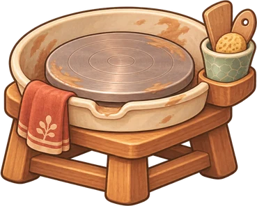
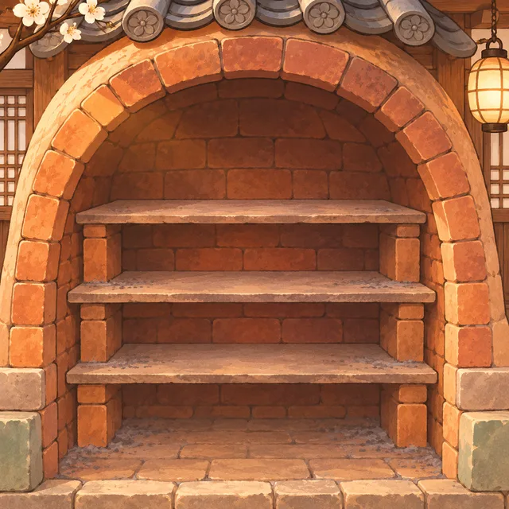
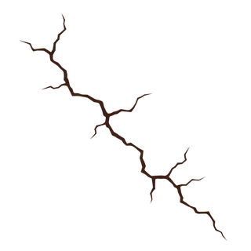
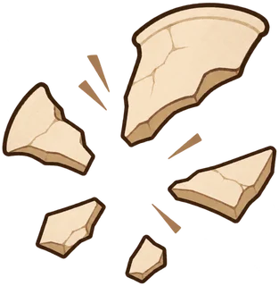

{{hint}}

물레 {{wheelSub}} 유약통
{{tubSub}}
유약통
{{tubSub}}
빚은 기물 {{boardWN}}
{{p.tag}}
유약 바른 기물 {{boardTN}}
{{p.tag}}

일치율
{{w.fitPct}}%
{{w.tmin}}
두께
와르르… 실패
성형 완료!{{w.fx.stars}}
흔들림
{{w.wLabel}}
{{w.sheetTitle}}{{w.sheetSub}}
{{w.toast}}
대기{{gz.trayN}}
{{gz.trayEmptyText}}
{{gz.potHint}}
{{gz.ringLab}}
{{gz.subGuideText}}
기울기
{{gz.angLab}}{{gz.angNm}}
완성 미리보기
{{gz.pvPct}}
📋 의뢰 조건
{{cd.t}}
{{gz.liftText}}{{gz.liftSub}}
{{gz.condText}}
유약 고르기유약마다 색과 재료가 달라요
{{gz.toast}}


{{ko.sc.ribTxt}}
{{ko.it.name}}
실력 점수
총 {{ko.sc.tot}}점 / {{ko.sc.max}}
발색
{{ko.sc.cpct}}
평가액
{{ko.sc.mul}}
 {{ko.sc.val}}
{{ko.sc.val}}
{{ko.sc.val}}
파편과 재료 일부는 돌아와요.
파편 +3
점토 30% 회수
소성 중
{{ko.bk.clock}}
{{ko.bk.note}}
{{ko.bk.fan.title}}{{ko.bk.fan.left}}
이번 가마 결과
{{r.grade}}
{{r.name}}
{{r.sub}}
예상 평가액 합계
{{ko.rs.total}} G
가마 문을 연다…
{{ko.toast}}
{{shTitle}}
🎨 공방 꾸미기보유 {{gold}}G
{{di.n}}{{di.d}}
🖌 붓으로 무늬 그리기
그릇 위를 손가락으로 그려요 · 유약 위에 그려 가마에서 구워져요
{{pmTitle}}
{{toast}}